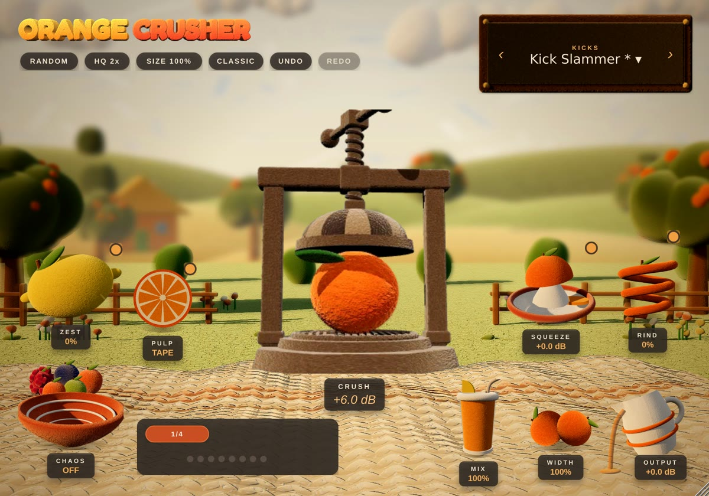

Distortion
Orange Crusher
Squeeze juice out of drums, bass and anything else.

What is Orange Crusher?
Orange Crusher is a distortion and saturation plugin served fresh from the juicer. Press down for drive, pick a pulp (tape, tube, diode, fold or crush), and squeeze it through a clipper for loud, juicy drums, gritty bass and vocals with bite. Gentle and warm or full-pulp chaos, you choose how much zest goes in.
What's on the plate
- Press Crush: the main drive
- Orange slice Pulp: tape, tube, diode, fold or crush saturation
- Mango Zest: transient punch
- Juicer Squeeze: a built-in clipper
- Peel spiral Rind: sub boost
- Bowl Chaos: random movement in time with your track
- Glass and oranges Mix and stereo width
Great for
- Drum buses that need more punch
- Bass that should sit up and growl
- Loops that feel a little too polite (a pinch of Chaos makes them breathe)
Works in your DAW
AU, VST3 and AAX on Mac, VST3 on Windows. Logic Pro, Ableton Live, Pro Tools, FL Studio, Cubase, Studio One, Reaper, Bitwig, GarageBand and more. macOS 11 or later (Apple silicon and Intel), Windows 10 and 11 (64-bit).
From $19, yours forever with free updates. Or get it with all 16 in the Full Fridge Bundle, Monthly Pass or Breakfast Club.
More from the menu
Popping Candy · Spice Shelf EQ · Popcorn Sandwich Compressor · Cherry on the Top Mastering · Spaghetti Delay · Bread Oven Reverb · Food Fight · Ghost Pepper Clipper · Hot-o-Pan · Gummy Gate · Milkshake Chorus · Burnt Toast Tape Machine · Noodle Filter · Muesli Granular · Butter Spread